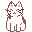

Olá! Meu nome é Índigo! 

Eu tenho 22 anos, estou no último semestre de Análise e Desenvolvimento de Sistemas na
USJT.
Sou autista, trans e tenho dois namorados incríveis que eu amo muito. Sou pai de dois
gatinhos e um gatão (ps. ela é uma cadela, mas ela acha que é um gatinho então a gente não
conta pra ela)
Aprendi a mexer no Excel na mesma época em que aprendi a escrever, e desde então
eu uso planilhas para tudo.
Tenho conhecimento em HTML e CSS básico (Esse site? Eu que
fiz!), Java e JavaScript
intermediário e Pacote Office avançado, com foco em Excel.
Dentro do
Desenvolvimento de Sistemas,
minha área favorita é a Modelagem e Engenharia de Software. Tenho conhecimento em
StarUML e adoro fazer
uma especificação de requisitos. Gestão de Qualidade é uma grande área de interesse,
principalmente a
criação do plano de testes.
Eu tenho muito a aprender ainda, e minha jornada está só no começo!